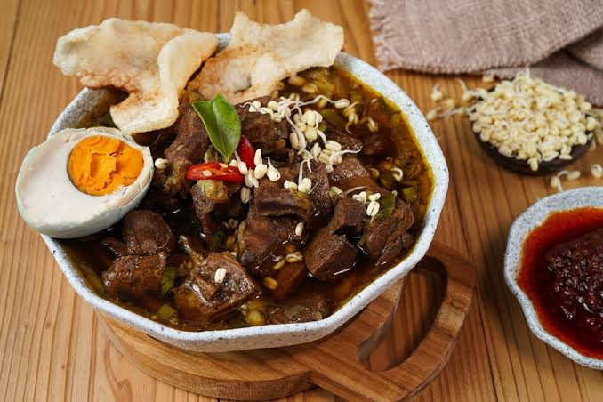

Pilih Resep Favoritmu
Tiga hidangan klasik khas jawa

Rawon
Rawon makanan berupa sup daging sapi berkuah hitam kaya rasa menggunakan kluwek sebagai bumbu utama.
Lihat Resep
Nasi Pecel
Makanan khas yang terdiri dari nasi, sayuran rebus, dan sambal kacang yang gurih.
Lihat Resep
Soto Lamongan
Makanan berupa sup ayam berkuah kuning yang gurih, disajikan dengan suwiran ayam, bihun, telur, dan koya.
Lihat Resep